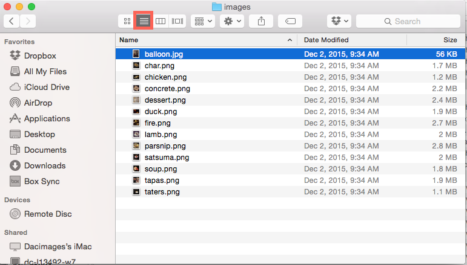
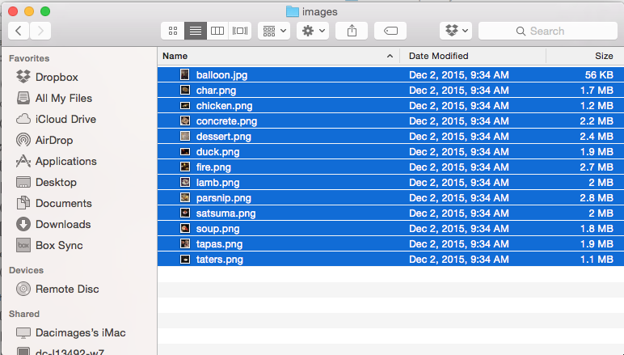
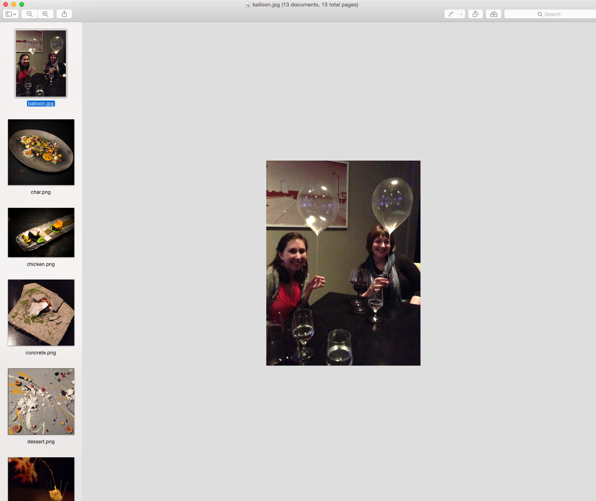
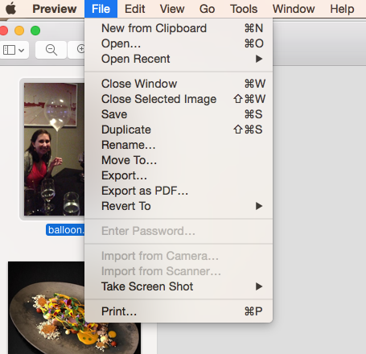
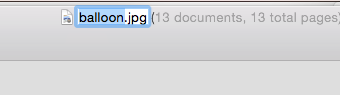
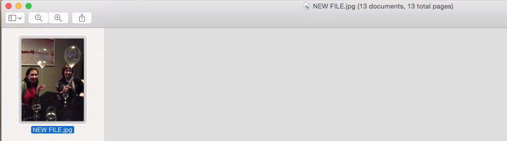
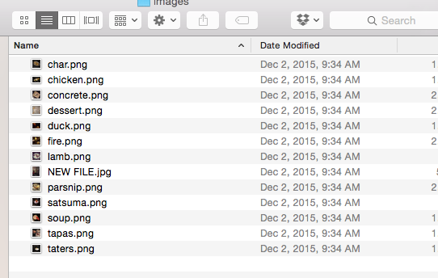
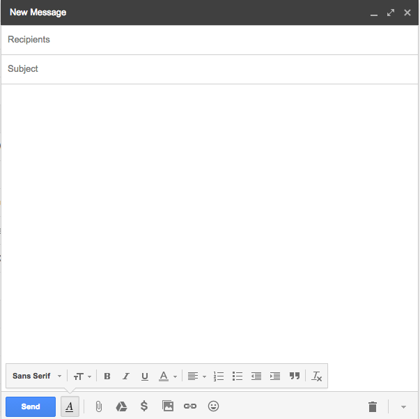
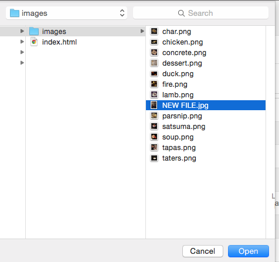

1.) Open the "Grampa's 70th Birthday" folder, it should look something like this (a bunch of files). Click the icon highlighted in red (below) to make the files appear in a long list.
2.) Click the first image once. Then hold down the "Shift" key. Then click the last image (you might need to scroll down). All the images should highlight, in blue, as shown below.
3.) Double click the highlighted files, and they should all open in "Preview". A list of all the images is on the left.
4.) Find a photo you like, then click on it (it will appear big in the the main window and highlighted on the left). Click the "File" menu, then click "Rename..."
5.) At the top of the window, you'll see the file name highlighted in blue. Type a new name and hit "Return" on the keyboard.
6.) The file is now renamed! You can see it has a new name over on the left side of the screen. Rename all the files you want to.
7.) Close preview, and open the folder back up on the Desktop. You'll see your files have new names.
8.) Now go to gmail and create a new message, like normal (almost done!)
9.) Click the little paper clip to attach a file. Go to "Dekstop" then click once on "Grandpas 70th Birthday", then find the photos you renamed and attach them! Hooray!
the end